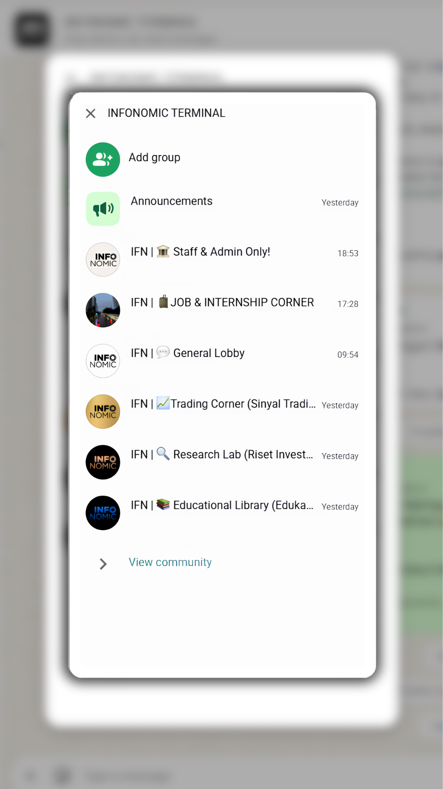

General
General Lobby
Tempat diskusi umum dan sharing seputar ekonomi dan investasi bagi seluruh anggota komunitas.
Komunitas Resmi
Hii Fellow Infonomists, Traders & Investors —
selamat datang di ruang diskusi, riset, dan literasi pasar modal Indonesia.
Komunitas ini merupakan wadah untuk diskusi dan riset seputar Ekonomi dan Investasi — dirancang untuk membantu Anda memahami pergerakan pasar global dan domestik secara lebih dalam.
🔔 Forum ini dikenal sebagai IFN (Infonomic) — dikelola oleh tim broker efek dan manajer investasi berlisensi.

Tempat diskusi umum dan sharing seputar ekonomi dan investasi bagi seluruh anggota komunitas.
Analisis mendalam: Financial Modelling, Valuation, Technical Charting, dan Money Flow.
Pusat literasi: materi edukasi, istilah keuangan, perencanaan keuangan, dan tips sertifikasi.
Watchlist dan sinyal trading untuk strategi scalping, swing, dan long-term.
Info lowongan kerja dan internship di pasar modal, Web3, dan industri keuangan terkait.